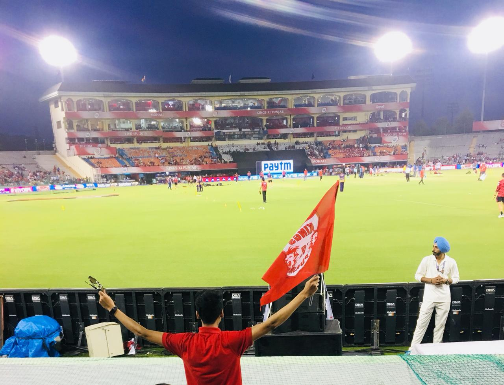
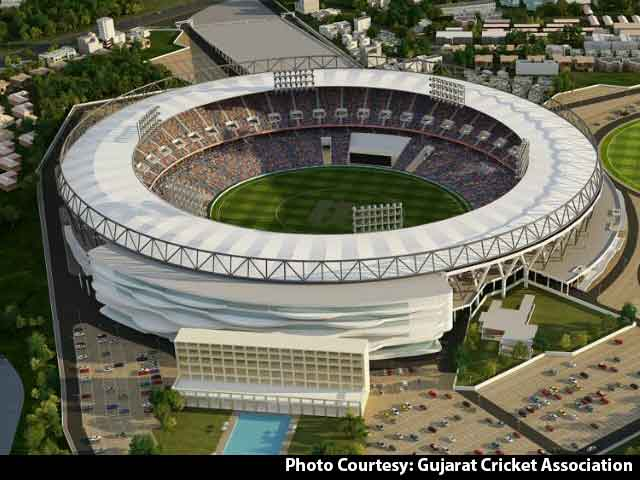
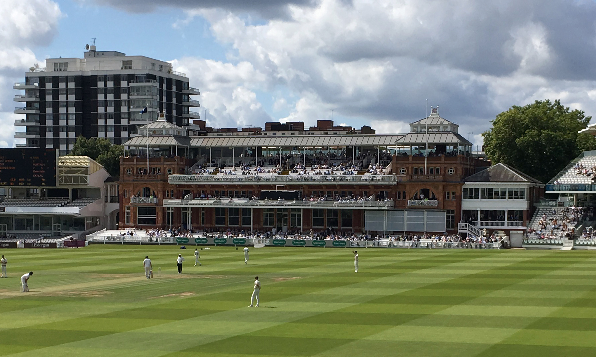

 Bindra Cricket Stadium is located at mohali (Punjab). This stadium has very advanced facilities as compared to other cricket stadium.
 Sardar Patel Stadium is located at Ahmedabad (Gujarat). This stadium is the largest cricket stadium in world. This stadium is inaugurated by Donald Trump and Indian Prime Minister Narendra Modi.
 Lord's Cricket Stadium in London,UK. This stadium is the oldest stadium in the world (Established in 1814). Eden Gardens Stadium is located at Kolkata, India. This stadium is oldest stadium in India.